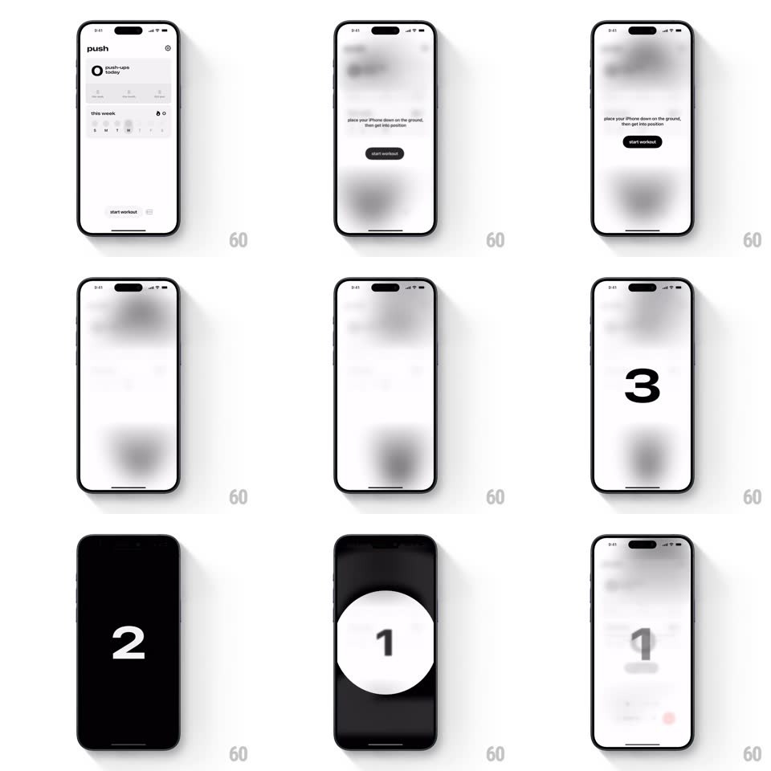

Media
Frame-by-frame

Rebuild this interaction 1:1: Push's workout countdown - "place your iPhone down on the ground, then get into position" over a blurring dashboard, then giant 3-2-1 digits with alternating black/white screen flashes that land on the active workout.

Rebuild this interaction 1:1: Push's workout countdown - "place your iPhone down on the ground, then get into position" over a blurring dashboard, then giant 3-2-1 digits with alternating black/white screen flashes that land on the active workout. ## Integration Integration: stack-agnostic spec - springs given as stiffness/damping, timed motions as duration + curve; map every value to your framework and animation library of choice. ## Scene The push dashboard blurs into abstraction; centered instruction text with a black "start workout" pill; then a full-screen countdown: enormous digits (3, 2, 1) centered, the background alternating between blurred-light and pure black per beat. ## Motion spec Pattern: high-contrast flash countdown. - Tap "start workout": the dashboard blurs away (300ms, blur to 20px) and the instruction screen holds ~2s. - Each count beat (1s apart): the giant digit slams in (scale 1.6 -> 1 with a hard spring ~500/24), and the whole screen's palette inverts - blurred white on 3, pure black with white digit on 2, blurred white on 1 - the flash itself is the metronome. - Each digit holds ~700ms then snaps out (100ms, no fade) as the next slams. - After "1": the screen cuts to the active workout session (counter UI), the blur gone - hard cut, no transition, the workout just starts. ## Calibration - Exactly 1s per beat; the flash is binary (no gradient crossfades between palettes). - Digits are ~40% of screen height - legible from the floor, which is where the phone is. ## Reduced motion Digits crossfade on a steady dark background; no flashes. ## Don't miss - The user is not holding the phone - everything is huge, high-contrast, and timed, nothing interactive. - The blurred backdrop keeps the app's own dashboard colors bleeding through on light beats.